The Last of Us es una serie de televisión estadounidense postapocalíptica que se estrenó el 15 de enero de 2023 a través de HBO. Está basada en el videojuego "The Last of Us", desarrollado por Naughty Dog en 2013.
La serie es la producción televisiva más grande de la historia de Canadá, comenzó a filmarse en Calgary, Alberta, en julio de 2021 y finalizó en junio de 2022. Es la primera serie de HBO basada en un videojuego, y es una producción conjunta de Sony Pictures Television, PlayStation Productions, Naughty Dog, The Mighty Mint y Word Games.
La primera y única temporada hasta el momento, está compuesta por nueve episodios escritos por Craig Mazin, y Neil Druckmann, quien escribió y dirigió el juego. El compositor original del juego, el argentino Gustavo Santaolalla, también fue quién compuso la partitura de la serie.
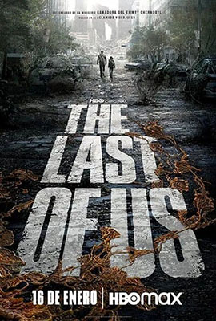
Sinopsis
La historia de The Last of Us sucede veinte años después de que la civilización moderna haya sido destruida a causa del hongo Cordyceps Unilateralis, el cual se adueña del cuerpo de los humanos, volviéndolos hambrientos y violentos, con el único propósito de seguir propagando la infección (este hongo existe en la vida real, causando efectos similares a los de la serie, pero a algunos insectos).
Joel, un superviviente de carácter recio, es contratado para sacar de contrabando a Ellie, una niña de 14 años, fuera de una opresiva zona de cuarentena. Lo que comienza como un pequeño trabajo pronto se convierte en un viaje brutal y desgarrador, en el que ambos deben atravesar los EE.UU. y depender el uno del otro para sobrevivir.
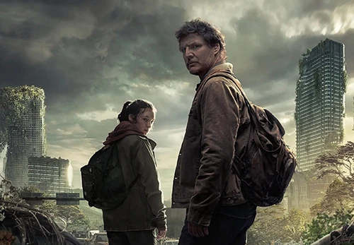
Personajes y reparto
Principales
Joel Miller
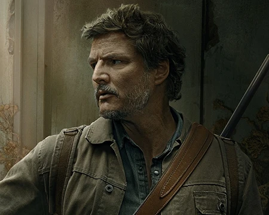
Joel, interpretado por Pedro Pascal, es un sobreviviente endurecido que está atormentado por los traumas de su pasado. Tiene la tarea de sacar de contrabando a una niña de una zona de cuarentena y finalmente, atravesar los Estados Unidos juntos, en un mundo lleno de amenazas.
Ellie Williams
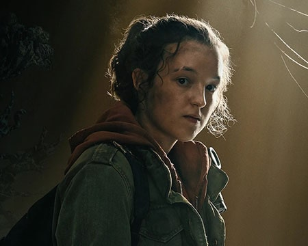
Ellie, interpretada por Bella Ramsey, es una niña de 14 años desafiante y muy irascible, pero con actitudes sarcásticas y un gran sentido del humor. Ella es inmune a la infección cerebral por Cordyceps y puede ser la clave para crear una vacuna.
Tommy Miller
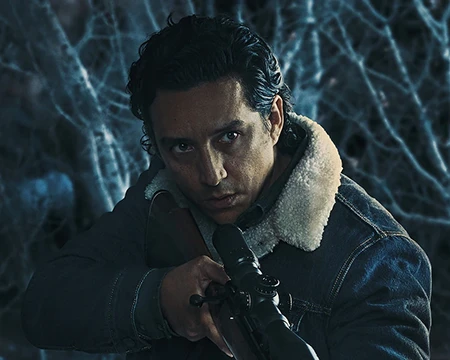
Tommy, interpretado por Gabriel Luna, es el hermano menor de Joel y un ex soldado que mantiene el idealismo en su esperanza de un mundo mejor. Tommy formó parte de las Luciérnagas en el pasado, pero terminó abandonando la causa.
Tess
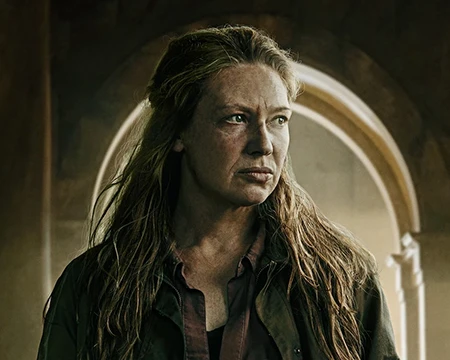
Tess, interpretada por Anna Torv, una superviviente endurecida y socia contrabandista de Joel. Es muy respetada en la zona de cuarentena de Boston, y es quien convence a Joel de proteger y transportar a Ellie.
Recurrentes
Marlene
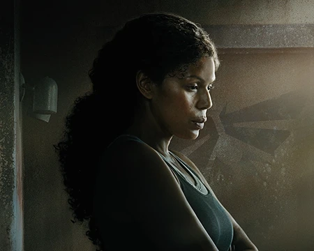
Merle Dandridge como Marlene, la jefa de las Luciérnagas, un movimiento de resistencia que espera liberarse de los militares.
Sarah
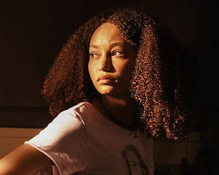
Nico Parker como Sarah, la hija de Joel.
Bill
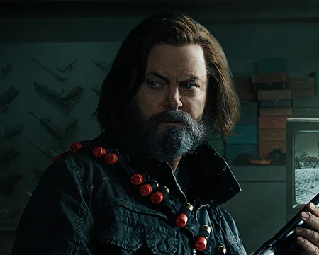
Nick Offerman como Bill, un sobreviviente que vive en un pueblo aislado con Frank. Bill es una persona paranoica que descofiaba del gobierno, por lo cual ya tenía un bunker subterráneo preparado con armas y provisiones.
Frank
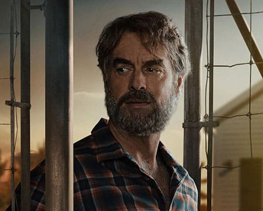
Murray Bartlett como Frank, un superviviente que vive en un pueblo aislado con Bill.
Henry
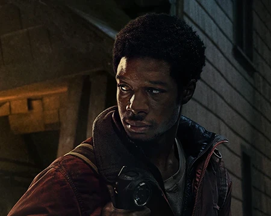
Lamar Johnson como Henry Burrell, un joven que se esconde de un movimiento revolucionario en Kansas City con su hermano menor Sam.
Sam
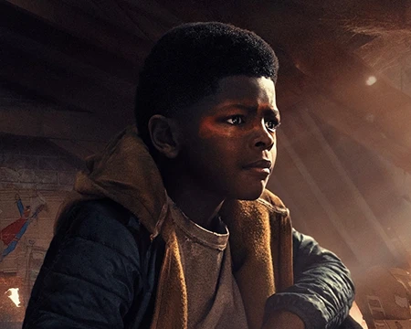
Keivonn Montreal Woodard como Sam, un niño sordo y artístico que es perseguido por revolucionarios violentos junto a su hermano Henry.
Kathleen
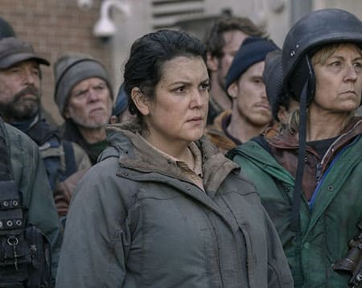
Melanie Lynskey como Kathleen Coghlan, la líder de un movimiento revolucionario en Kansas City, quienes se sublevaron del gobierno.
Riley
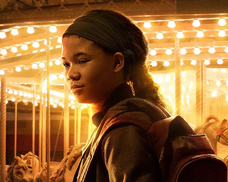
Storm Reid como Riley Abel, una niña huérfana que crece en el Boston postapocalíptico, quien tenía una relación muy especial con Ellie.
María
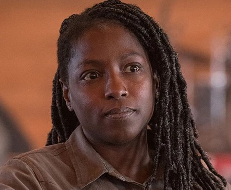
Rutina Wesley como María, la líder de un asentamiento en Jackson, Wyoming y la esposa embarazada de Tommy.
David
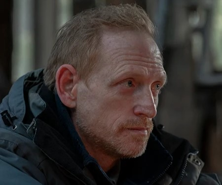
Scott Shepherd como David, un predicador que es el líder de un culto caníbal, que persiguen a Joel y Ellie, teniendo David intenciones macabras con esta última.
James
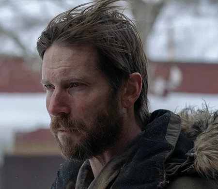
Troy Baker como James, un miembro senior de la colonia de David. Baker interpretó previamente a Joel en los videojuegos, y los directores creyeron que era necesario incluirlo en la serie, por lo importante que fue para el juego.
Anna
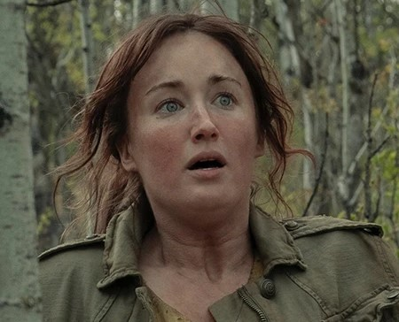
Ashley Johnson como Anna, la madre de Ellie; una mujer embarazada solitaria obligada a dar a luz en circunstancias aterradoras. Johnson interpretó previamente a Ellie en los videojuegos, y al igual que con Baker, creyeron que era necesario incluirla en la serie por todo lo que le brindó al proyecto.
En 2003, un hongo desencadena una pandemia mundial y convierte a sus víctimas en atacantes sedientos de sangre. Joel huye con su hija Sarah cuando el virus comienza a propagarse, pero ella es asesinada por un soldado que los ataca, mientras que Joel es salvado por su hermano Tommy.
Veinte años después, el virus ha devastado el mundo; Joel vive en la zona de cuarentena de Boston administrada por la Agencia Federal de Respuesta a Desastres (FEDRA), como contrabandista con su compañera Tess.
Cuando Tommy no logra contactarlos desde su ubicación en Wyoming, intentan comprar una batería de automóvil a un distribuidor local, pero en cambio se la venden a las Luciérnagas, un grupo rebelde que se opone a FEDRA. Al intentar recuperarlo, descubren que el trato salió mal y Marlene, la líder herida de las luciérnagas, les ruega a Joel y Tess que lleven a la joven Ellie a la Casa del Estado de Massachusetts a cambio de suministros.
Son atrapados por un soldado mientras se escabullen y Ellie lo apuñala cuando los prueba para detectar infecciones. Cuando el soldado intenta dispararle, Joel lo golpea hasta matarlo. Tess se da cuenta de que Ellie está infectada, pero les promete que lleva tres semanas herida y no se convirtió. Entran en una zona de contaminación biológica para huir de los soldados FEDRA que los persiguen.
2. Infectados
En 2003, en Indonesia, una científica especializada en la micología es llamada por el gobierno para examinar un caso. Resulta que se trata del hongo cordyceps, que infectó a varios humanos. Cuando la científica se da cuenta de que la situación ya no es controlable y que no hay cura, propone bombardear Yakarta.
Volvemos al presente, en 2023, y Ellie, Joel y Tess siguen con su travesía. Ellie les revela por qué es tan importante y valiosa. Resulta que es inmune al hongo, y que estaban buscando crear una cura basándose en ella. Buscando una manera de seguir con su camino y hacer que puedan crear una posible vacuna, van a través de lo que era un hotel, pero no pueden seguir debido a que hay infectados. Entonces, van por el camino corto, a través de un museo. Dentro, hay infectados que son ciegos, pero pueden escuchar.
Después de estar a punto de morir, escapan para buscar a los que le darían la batería a cambio de Ellie en la Casa de Estado de Massachusetts, pero todos están infectados. Tess fue mordida antes, por lo que se sacrifica para que Joel y Ellie escapen de la horda de infectados que se aproximaba, y ellos siguen en su aventura sin ella.
3. Mucho, mucho tiempo
En el presente, Joel y Ellie siguen las instrucciones finales de Tess y caminan para encontrarse con los aliados Bill y Frank. En su viaje, Joel le enseña a Ellie sobre la ejecución de inocentes por parte del gobierno durante los primeros días del brote.
En un flashback de 2007, Frank se topa con el complejo del sobreviviente paranoico Bill, quien lo acoge y los dos forman una relación romántica. Varios años después, Frank contacta a Tess por radio y las parejas entablan una tenue amistad.
En el presente, Frank está lisiado por una enfermedad degenerativa y le pide a Bill que lo sacrifique después de casarse, pero Bill, que no quiere vivir sin Frank, también se suicida.
Joel y Ellie llegan un tiempo después. Descubren una carta que Bill le dejó a Joel, donde le dice que proteger a Frank es lo que le dio sentido a su vida después del brote. Bill le dejó a Joel su camión y suministro de armas, y parten en busca de Tommy.
4. Por favor, toma mi mano
Viajando a través de Misuri en su camino a Wyoming, Joel y Ellie toman un atajo a través de las ruinas de Kansas City cuando son emboscados por bandidos. Joel mata a dos de ellos, pero un tercero logra dominarlo y casi lo estrangula hasta la muerte antes de que Ellie lo salve disparándole al hombre con su arma.
Más bandidos, liderados por Kathleen, encuentran los cuerpos; Kathleen, creyendo que Joel y Ellie están en contacto con un hombre llamado Henry, ordena una persecución. El segundo al mando de Kathleen, Perry, encuentra evidencia de que los infectados se abrieron camino hacia la ciudad, pero Kathleen le ordena que lo oculte hasta que encuentren a Henry.
Joel encuentra un rascacielos donde él y Ellie deciden pasar la noche hasta que puedan encontrar una salida de Kansas City. Se despiertan y encuentran a Henry y su hermano Sam sosteniéndolos a punta de pistola.
5. Resistir y sobrevivir
Después de un enfrentamiento entre Henry y Sam con Joel y Ellie, Henry propone que puede ayudarlos a escapar de la ciudad usando túneles subterráneos, a lo que Joel acepta vacilante. Henry le admite a Joel que fue responsable de la captura y muerte del hermano de Kathleen a cambio de medicamentos para la leucemia de Sam.
Después de salir de los túneles, el grupo es atacado por un francotirador. Joel lo mata pero descubre que ya había informado a Kathleen; ella llega en breve con su milicia. Mientras Kathleen se prepara para matar a Henry, una multitud masiva de infectados rompe el suelo, incluido un gran "hinchador" que mata a Perry y un niño chasqueador que mata a Kathleen.
Sam le muestra a Ellie que fue mordido por un infectado. Ellie intenta usar su sangre para curar a Sam. Pero a la mañana siguiente, Sam infectado ataca a Ellie, lo que hace que Henry lo mate. Al darse cuenta de lo que hizo, Henry se suicida. Joel y Ellie los entierran y continúan su viaje.
6. Parentesco
Tres meses después de la muerte de Henry y Sam, Joel y Ellie llegan a Jackson, Wyoming, donde Joel se reencuentra con Tommy. Tommy y su esposa, María, están esperando un hijo. Joel le cuenta a Tommy sobre la inmunidad de Ellie y su propio estado mental en declive. Joel le pide a Tommy que lleve a Ellie a las luciérnagas porque teme no poder mantenerla a salvo; Ellie los escucha. Durante una confrontación, Joel afirma que se separarán.
Por la mañana, Joel cambia de opinión al recordar a su hija y viajan a Colorado a caballo. Allí, encuentran que las luciérnagas se han ido, posiblemente a un hospital en Utah. Joel y Ellie intentan escapar después de ver a un grupo de asaltantes. Uno de los hombres ataca a Joel; Joel lo mata pero es apuñalado. Joel y Ellie escapan de los perseguidores. Luego, Joel se desploma del caballo.
7. Lo que dejamos atrás
Ellie y un Joel herido se refugian en una casa abandonada. Cuando Joel se acerca a la muerte, insta a Ellie a que lo deje.
Ella recuerda su paso por la escuela militar de FEDRA, a la que asistió con su mejor amiga Riley Abel. Mientras Ellie causa problemas y pelea con sus compañeras, Riley se escapó y estuvo desaparecida durante tres semanas. Riley regresa a hurtadillas a su dormitorio y le revela a Ellie que se ha unido a las Luciérnagas.
Lleva a Ellie a un centro comercial abandonado, donde exploran un fotomatón, una sala de juegos y un carrusel. Riley le dice a Ellie que las Luciérnagas la han asignado a un puesto en Atlanta y que es su última noche en Boston. Si bien Ellie inicialmente está molesta, convence a Riley de que se quede y se besan. Un infectado las ataca y Ellie logra matarlo, pero ambas son mordidas durante la lucha. Con lágrimas en los ojos, deciden permanecer juntas y esperar a que la infección se afiance.
En el presente, Ellie encuentra una aguja de coser y comienza a coser la herida de Joel.
8. Cuando más necesitamos
Mientras busca comida para Joel, que aún se está recuperando, Ellie se encuentra con un predicador, David, y su compañero cazador James. Ella cambia su venado por penicilina.
David explica que encontró a Dios después del apocalipsis y ahora es el líder de un grupo de sobrevivientes. Él revela que el hombre que apuñaló a Joel era miembro de su grupo. Ellie se va e inyecta la penicilina a Joel.
Al día siguiente, ve a David con un grupo de hombres que buscan venganza contra Joel. Ella huye para alejarlos de Joel, pero es capturada. En el campamento de David, revela que ha estado alimentando a su grupo con carne humana.
Mientras tanto, Joel despierta y tortura a algunos de los hombres de David para que le digan el paradero de Ellie. David y James intentan matar a Ellie, pero ella mata a James y escapa. David persigue a Ellie, queriendo abusar de ella, pero mientras forcejeaban Ellie logra matarlo con un cuchillo de carnicero con mucha rabia. Joel encuentra a Ellie y se abrazan, luego se alejan.
9. Busca la luz
En el pasado, Anna, una mujer embarazada, corre a una casa después de huir de un infectado. Después de los ataques del infectado, Anna es mordida, pero antes de dar a luz a una niña, Ellie. Anna es encontrada por Marlene, una líder de los Luciérnagas, donde le pide que tome a Ellie y la mate; Ella vacilante lo hace.
En el presente, Ellie y Joel llegan a un hospital; donde los soldados de las luciérnagas toman a Ellie y noquean a Joel. Después de que Joel despierta, Marlene explica que los médicos están haciendo una cirugía en Ellie para producir una cura, pero esto terminaría con su vida. Marlene ordena que se lleven a Joel; Sin embargo, él contraataca y mata a la mayoría de los soldados. Joel encuentra a Ellie y sale del hospital. Marlene los intercepta, afirmando que todavía hay tiempo para encontrar una cura, pero Joel le dispara y la mata.
Cuando volvían en un auto, Ellie despierta y le pregunta a Joel que ocurrió, y él le miente diciendo que la cura no funcionaba y que había cientos de personas inmunes como ella. Su auto se descompone cuando Joel lleva a Ellie de regreso a Jackson, Wyoming. Mientras caminan, Ellie le hace prometer a Joel que todo lo que dijo sobre las luciérnagas era cierto; Él dice que sí.
¡Envíanos tu Feedback!
Nos interesa mucho saber qué opinas de la serie, y si tienes algún fan art, tatuaje o cosplay que quieres mostrarnos. Completando el siguiente formulario puedes enviarnos tu contenido y, si eres seleccionado, ¡salir en nuestro blog!